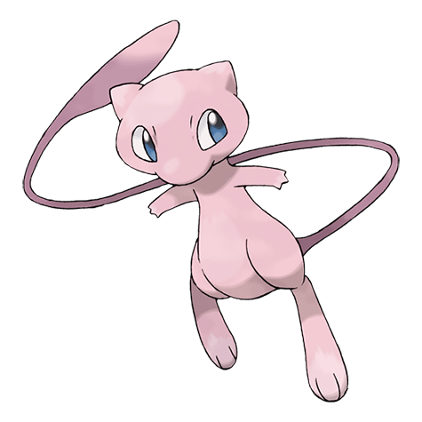

Назад
Мью

Мью — мифический Покемон первого поколения под номером 151 в Покедекс. Обитает он в регионе Канто и относится к Психическому типу. Мью не имеет эволюции. Говорят, что Мью обладает генетическим составом всех Покемонов. Он способен в любой момент сделать себя невидимым, поэтому полностью скрывает своё присутствие при приближении к людям.
Тип:
Психический
Эволюция
# 151 Мью